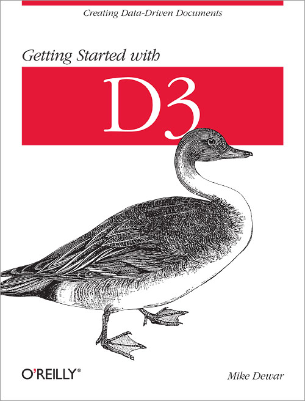
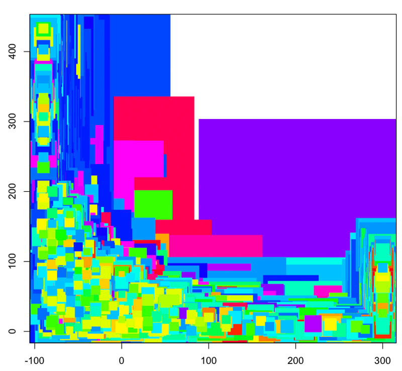

Sketching using D3.js
{
"name": "Mike Dewar",
"twitter": "@mikedewar",
"code": "github.com/mikedewar",
"talk": "/mobilizing_health_d3"
}

http://vimeo.com/35005701
- d3.js is brilliant
- so is the modern browser

http://chartsnthings.tumblr.com/
http://datakind.org - http://mobilizinghealth.org
{
'case_id': '1351',
'created_at': '2011-06-16 07:55:34',
'external_id': '',
'from_number': '9223173098',
'from_person_id': '',
'from_person_type': '',
'gateway_status': 'Delivered',
'id': '10002',
'incoming': '0',
'msg': '
Reply ACC to accept case: SUJAL RATH
Child 9414830579 KO BUKAR HAI OUR
AULTE HO RAHI HE DO DIN SEi
',
'project_id': '1',
'time_delivered': '',
'time_received_or_sent': '2011-02-27 09:16:01',
'to_number': '9414330400',
'to_person_id': '3',
'to_person_type': 'Doctor',
'updated_at': '2011-10-22 17:20:23'
}
Micha's Golden Rule:
Never Store Data in JSON Keys
- get data into chrome
- make a list of messages
- text-based histogram
- a time series graph
Basic Pattern
d3.select('ul')
.selectAll('li')
.data(data)
.enter()
.append('li')
.text(
function(d){
return d.label
}
)
time_scale = d3.time.scale()
.domain([min_time, max_time])
.range([10,790])
value_scale = d3.scale.linear()
.domain([d3.min(Y), d3.max(Y)])
.range([190,10])
circles
.attr('cx',function(d){return time_scale(d.x)})
.attr('cy', function(d){return value_scale(d.y)})
xAxis = d3.svg.axis().scale(time_scale)
svg.append("svg:g")
.attr("class", "xaxis")
.attr("transform","translate(0,170)")
.call(xAxis)
yAxis = d3.svg.axis().scale(value_scale)
.orient("left")
svg.append("svg:g")
.attr("class", "yaxis")
.attr("transform", "translate(40,0)")
.call(yAxis)
circles.on('mouseover', function(d){
svg.append('text')
.attr("x", time_scale(d.x) + 5)
.attr("y", value_scale(d.y) + 5)
.text(d.y)
.attr('class','tip')
})
- d3 is a javascript library by mike bostock
- the browser is a great tool to work in
- select - selectAll - data - enter - append
- modify attributes, style and text
- events and transtions
- d3js.org
- www.jeromecukier.net
- alignedleft.com
- developer.mozilla.org
- Javascript: the good bits, by Douglas Crockford
- github.com/mikedewar/d3py